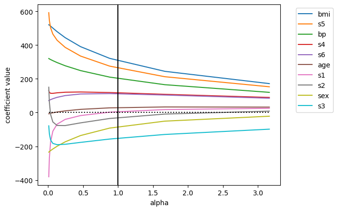
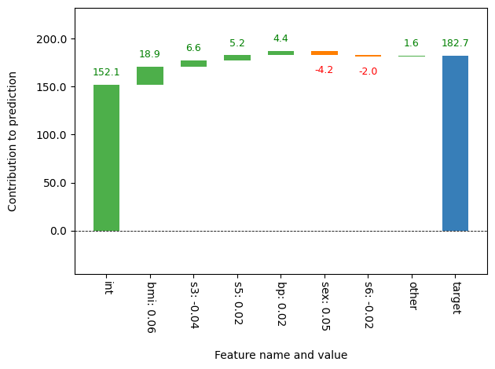
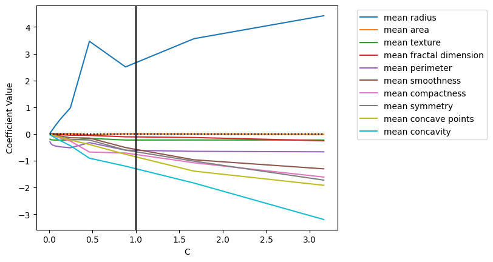
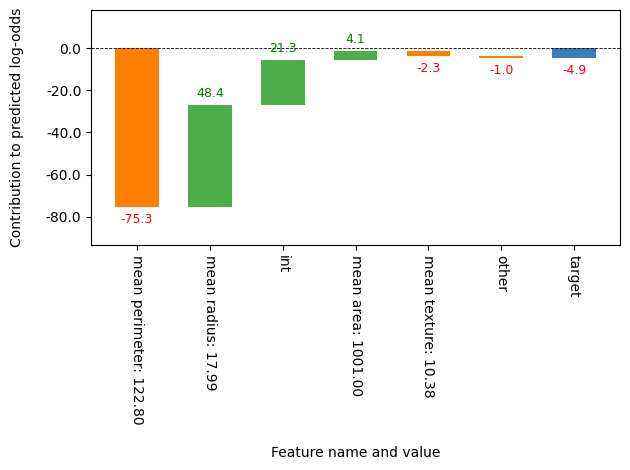
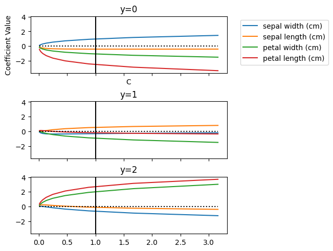

import sklearn.datasets
from model_inspector import get_inspector
from sklearn.linear_model import RidgeLinear Model
Inspector functionality specific to linear regression, logistic regression, and their variants
Linear Regression
X, y = sklearn.datasets.load_diabetes(return_X_y=True, as_frame=True)
inspector = get_inspector(Ridge().fit(X, y), X, y)plot_coefs_vs_hparam (regression model)
plot_coefs_vs_hparam (regression model) (hparam:str, vals:Sequence[float])
Plot coefficient values against a hyperparameter
Parameters:
hparam: Name of hyperparameter; must be an attribute ofself.modelvals: Values of that hyperparameter to use
ax = inspector.plot_coefs_vs_hparam("alpha", np.logspace(-2, 0.5, 10))
plot_waterfall (regression model)
plot_waterfall (regression model) (item:Union[pandas.core.series.Series,<built- infunctionarray>], bar_num_formatter:str='.1f', tick_num_formatter:str='.2f', sorted_value=True, threshold=0.01, blue_color='#377eb8', green_color='#4daf4a', red_color='#ff7f00', Title='', x_lab='', y_lab='', formatting='{:,.1f}', other_label='other', net_label='net', rotation_value=30)
Make a waterfall chart showing how each feature contributes to the prediction for the input item.
Parameters:
item: Input item, with the same shape and value meanings as a single row fromself.Xbar_num_formatter: Bar label format specifiertick_num_formatter: Tick label format specifier
Additional keyword arguments will be passed to waterfall_chart.plot
Remaining parameters are passed to waterfall_chart.plot.
ax = inspector.plot_waterfall(X.iloc[0])
show_model (regression model)
show_model (regression model) (intercept_formatter:str='.2f', coef_formatter:str='.2f')
Show model equation
Parameters:
intercept_formatter: Intercept format specifiercoef_formatter: Intercept format specifier
inspector.show_model()
target
= 152.13
+ 29.47
* age
- 83.15
* sex
+ 306.35
* bmi
+ 201.63
* bp
+ 5.91
* s1
- 29.52
* s2
- 152.04
* s3
+ 117.31
* s4
+ 262.94
* s5
+ 111.88
* s6
Binary Logistic Regression
from sklearn.linear_model import LogisticRegressionX, y = sklearn.datasets.load_breast_cancer(return_X_y=True, as_frame=True)
X = X.iloc[:, :10]inspector = get_inspector(LogisticRegression(max_iter=1_000).fit(X, y), X, y)plot_coefs_vs_hparam (binary model)
plot_coefs_vs_hparam (binary model) (hparam:str, vals:Sequence[float])
Plot coefficient values against a hyperparameter
Parameters:
hparam: Name of hyperparameter; must be an attribute ofself.modelvals: Values of that hyperparameter to use
ax = inspector.plot_coefs_vs_hparam("C", np.logspace(-2, 0.5, 10))
show_model (binary model)
show_model (binary model) (intercept_formatter:str='.2f', coef_formatter:str='.2f')
Show model equation
Parameters:
intercept_formatter: Intercept format specifiercoef_formatter: Intercept format specifier
inspector.show_model()
log-odds(target)
= 21.27
+ 2.69
* mean radius
- 0.23
* mean texture
- 0.61
* mean perimeter
+ 0.00
* mean area
- 0.48
* mean smoothness
- 0.79
* mean compactness
- 1.42
* mean concavity
- 0.76
* mean concave points
- 0.69
* mean symmetry
- 0.12
* mean fractal dimension
plot_waterfall (binary model)
plot_waterfall (binary model) (item:Union[pandas.core.series.Series,<built- infunctionarray>], bar_num_formatter:str='.1f', tick_num_formatter:str='.2f', sorted_value=True, threshold=0.01, blue_color='#377eb8', green_color='#4daf4a', red_color='#ff7f00', Title='', x_lab='', y_lab='', formatting='{:,.1f}', other_label='other', net_label='net', rotation_value=30)
Make a waterfall chart showing how each feature contributes to the prediction for the input item for a binary classification model.
Parameters:
item: Input item, with the same shape and value meanings as a single row fromself.Xbar_num_formatter: Bar label format specifiertick_num_formatter: Tick label format specifierwaterfall_kwargs: kwargs to pass towaterfall_chart.plot
Remaining parameters are passed to waterfall_chart.plot.
ax = inspector.plot_waterfall(X.iloc[0])
Multiclass Logistic Regression
from sklearn.linear_model import LogisticRegressionX, y = sklearn.datasets.load_iris(return_X_y=True, as_frame=True)inspector = get_inspector(LogisticRegression(max_iter=10_000).fit(X, y), X, y)plot_coefs_vs_hparam (multiclass model)
plot_coefs_vs_hparam (multiclass model) (hparam:str, vals:Sequence[float])
Plot coefficient values against a hyperparameter
Parameters:
hparam: Name of hyperparameter; must be an attribute ofself.modelvals: Values of that hyperparameter to use
Returns NumPy array of Axes objects.
axes = inspector.plot_coefs_vs_hparam("C", np.logspace(-2, 0.5, 10))
show_model (multiclass model)
show_model (multiclass model) (intercept_formatter:str='.2f', coef_formatter:str='.2f')
Show model equation
Parameters:
intercept_formatter: Intercept format specifiercoef_formatter: Intercept format specifier
inspector.show_model()log-odds(target = 0) = 9.85 - 0.42 * sepal length (cm) + 0.97 * sepal width (cm) - 2.52 * petal length (cm) - 1.08 * petal width (cm)
log-odds(target = 1) = 2.24 + 0.53 * sepal length (cm) - 0.32 * sepal width (cm) - 0.21 * petal length (cm) - 0.94 * petal width (cm)
log-odds(target = 2) = -12.09 - 0.11 * sepal length (cm) - 0.65 * sepal width (cm) + 2.72 * petal length (cm) + 2.02 * petal width (cm)